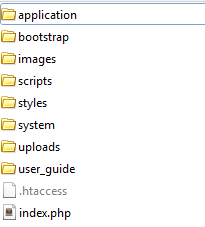
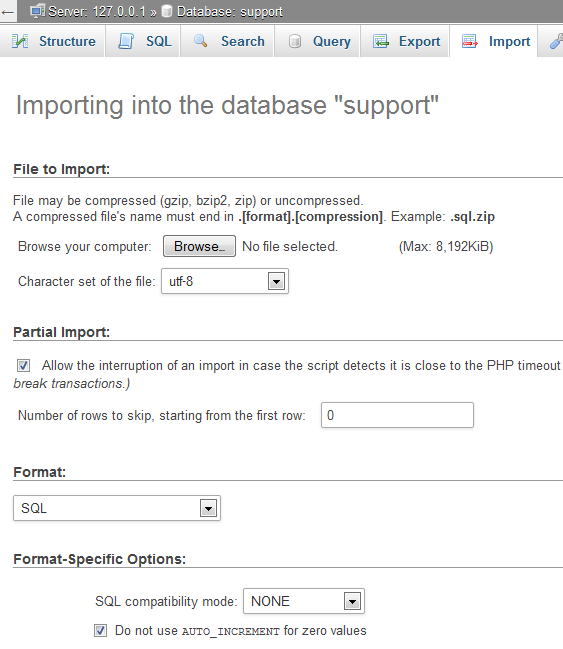

Created: 16/12/2013
By: Patchesoft
Email: patchesoft@gmail.com
Thank you for purchasing the Support Centre application. If you have any questions that are beyond the scope of this help file, please feel free to email via my user page contact form here. Thanks so much!
You can also read our QuickStart Guide
This application is built up around the CodeIgniter framework. This framework is freely available on the internet and documentation for using the source code can be founded on their website: http://ellislab.com/codeigniter. CodeIgniter is a PHP Framework written in MVC (model-view-controller) format which allows developers to create applications that are structured in a very clean and efficient way. When you unzip the Support Centre download, you will be presented with the following directory structure. Below is a quick overview where you can find various files if you are new to using CodeIgniter.

You can find more information on directory structure at the CodeIgniter website and reading the User Guide: http://ellislab.com/codeigniter/user-guide/.
Once you have downloaded your file from the Envato Marketplace, you will need to extract the files from the ZIP file. You will need to upload the Support Centre core files to a webserver. First locate the core files in the folder: /SupportCentre/core_files/core.zip. You will need to extract the files from the zip and upload them so that these files are in your main directory on your webserver, usually this is the public_html folder. Your webserver's main directory should look something like this:
Before you can use your Support Centre, you will need to edit the config files. First locate the config file in: application/config/config.php and open it up using a text editor such as notepad. The only line you should need to edit is the:
$config['base_url'] = 'http://www.example.com/';Replace the http://www.example.com with your own domain name, making sure you keep the quotation tags around it as above. There are some other settings that you can also edit in this file if you feel the need to customise your Support Centre further but for a basic installation this is all you should need to edit.
If you don't have mod_rewrite settings enabled, you can still use the application by setting your index_page value to the following line:
$config['index_page'] = 'index.php';
This setting will make it so your URLs have index.php in them. However, the default setting is to remove this and assumes you have mod_rewrite enabled on your webserver.
Save the file and overwrite the existing one on your webserver.
The second file you will need to edit is your database file. Find the file: application/config/database.php and open it up using a text editor like Notepad. You will need to edit the lines listed below with your own database login information. For the most part, host stays the same as localhost unless your web host specifies to you otherwise. You will need your database name, database username and database password.
$db['default']['hostname'] = 'localhost'; $db['default']['username'] = 'your_username'; $db['default']['password'] = 'your_password'; $db['default']['database'] = 'database_name';Once you have modified this file, save it and overwrite the existing one on your webserver.
Next you will need to execute the SQL file that came with the Support Centre download. This file will create the database tables that are used to store the data of your application. Usually you can import the SQL tables by using a database management system like PHPmyAdmin. The SQL file is located in SupportCentre/core_files/database.sql in the Support Centre download.
To Import the file, login to your database management system, such as PHPmyAdmin. Make sure you are on the database that you named in the database.php config file then locate the Import Tab on PHPmyAdmin.
Next select the browse button (as shown in the screenshot above) and locate the SQL file (SupportCentre/core_files/database.sql) from your Support Centre Download. Next click the Go! button and you should now see database tables appear in the left sidebar.
Finally, you will need to run the install file in your web browser. You should be able to locate it by going to http://www.mydomain.com/install/ where mydomain.com is replaced by your own. If you're having problems accessing this URL, double-check that you entered the correct information in the config.php file. If you are sure that it is correct, it may be something to do with your webserver's settings with allowing friendly URLs. The problem most notably is usually with the .htaccess file- make sure this file is in your public_html directory (like in the directory screenshot above). If you still have problems, head to the Troubleshoot section of this guide.
On the Install Page, you will need to create the admin account which will have all the privleges for managing the Support Centre. You can also setup some initial settings for getting your Support Centre started (you can change these later).
IMPORTANT: Once you have installed the Support Centre, please delete the file application/controllers/install.php! This will prevent other users from messing up your settings.
INSTALLING IN A SUB-FOLDER
If you're installing the software in a sub-folder, such as http://www.example.com/support_system/ then you will need to modify the .htaccess file inside the main directory (the one that holds the application, bootstrap folders etc). All you need to do is open up the .htaccess file in your text editor and copy the following code, replacing the sub-folder with the name of your sub-folder (in this example, the sub-folder is called support_system. Replace this with the name of your sub-folder).
RewriteEngine On
RewriteBase /support_system
RewriteCond %{REQUEST_FILENAME} !-f
RewriteCond %{REQUEST_FILENAME} !-d
RewriteRule ^(.*) index.php?/$1
Save the file as .htaccess and overwrite the one inside your main directory that you used to install the software in (the folder containing the application, bootstrap folders etc). You can skip this step if you're installing in your main folder.
This part of the guide is to show you where the most common elements of the site are located. Remember, this site uses CodeIgniter Framework, so for additional support, please use their website and user guide: http://ellislab.com/codeigniter/user-guide/
The site's styling is based off Bootstrap 3; Bootstrap 3 comes with lots of predefined CSS elements that you can use to create well presented websites with. You can view the Bootstrap documentation and examples here: http://getbootstrap.com/. If you wish to upgrade the Bootstrap version or make your own changes to it, you can find the files in the bootstrap/ directory.
The Support Centre also uses it's own custom styling to create the site layout. You can find the stylesheet file in styles/style.css folder. You can also add Custom CSS to the site via the Admin Panel of the Support Centre.
The template files, also known as views, can be found in application/views/. These files contain the HTML of the site and modifying these files allows you to change the way the site presents data. These files also contain some PHP code so it's important to know what you're doing when editting these files. The layout file can be found in application/views/layout/layout.php.
The controller files, which contain the site logic, can be found in application/controllers/ folder. These are PHP files that are used to control how the site works.
The model files can be found in application/models/ which contain the database logic.
The Javascript files can be found in the scripts/ folder.
Some 3rd Party libraries have been used in this software. One that may be of interest to you is the HTML Filter library, which whitelists certain HTML elements that can be used for the Knowledge Base. This file can be found in application/libraries/lib_filter.php.
Below you can view a screenshot of the frontpage. This section aims to guide you what is happening on your Frontpage of your Support Centre.
The Ticket System is the main part of the Support Centre. It allows users to open a discussion between themselves and the staff of your Support Centre, we call these discussions tickets. This allows the user to ask a question and your staff to respond in an organised environment. There are two types of tickets that users can create:
User Created Tickets - This is the most common ticket type. When a user registers on your Support Centre, they are allowed to create a ticket. Whenever the user logs into their account, all of their tickets will be linked to their account. They will be able to view their old tickets and also open new ones.
Guest Created Tickets - This option allows for a user to create a ticket without the need for registering an account. This option can be disabled completely in the Admin Panel, which will force users to register if they wish to create a ticket. The guest ticket will provide the user who made it with a passcode and ticketID that will allow them to use and view the ticket they created.
Staff can answer both ticket types the same and all functionality is available to both types of tickets so there are no limitations. However, some sites do prefer their users to register an account to stop users spamming their system. Should you find Guest Tickets are being abused, we suggest disabling them in the Admin Panel.
Above you can view a Ticket created by a user. Here is what is being displayed:
Guest Tickets are exactly the same, only they need to enter their TicketID, Passcode and Email to view the ticket.
Users can also upload files if you enable this option. By default, only .txt, .png, .gif and .jpeg files can be uploaded. However, we recommend always scanning user-uploaded files with a virus scanner before hand to make sure the files are clean. There are a few online ones which can do this for you too. If you do not wish to allow users to upload files with their tickets, you can disable this option in the Admin Panel.
The Admin Panel allows you to manage and customise your Support Centre. This section will give you an overview of the various options that the Admin Panel provides and also show you how you can benefit from its features.
The Admin Panel can be accessed by highlighting the Home tab and clicking on the Admin Panel link in the Drop down menu. This link only appears if the account logged in has been given the Admin Panel access.
There are four types of access levels that can use the Admin Panel.
Global Settings - This area of the Admin Panel allows you to modify various settings for the Support Centre. These settings are very important to the site so access is limited to the Support Admin only. Options include being able to disable Guest Tickets, File Uploads and Support Ticket Feedback.
Twitter Settings - This allows you to enter in your Twitter API details in order for the Twitter Box to work on the frontpage. You will need a Twitter Account and also obtain your API keys from https://dev.twitter.com/.
Custom CSS - If you prefer to add your styling directly to the site via the Admin Panel, then this option is for you. The styling is applied to every page.
Custom Ticket Fields - One of the more powerful features of the Support Centre is to allow you to create custom ticket fields. These fields are presented to the user when they go to create their support ticket. You can create textboxes, dropdown menus and text fields. You can use these to capture data from users such as their username or shipping address.
Create Agent - Agents are staff accounts that you can create and give to your site staff to use. These accounts have special access to viewing support tickets. The Create Agent option allows you to create an account with a varying degree of access to options of the Admin Panel.
Agent Log - The Agent log provides you with an update log of what your agents have been doing. It shows which tickets they have replied to and provides a link to that ticket so you can check up on it.
Edit User - This allows you to edit users on your Support Centre. Among the options is the ability to ban a user, which will block the account from being used or accessed.
IP Blocking - This low-level IP Blocking system allows you to blacklist certian IP addresses from accessing the Support Centre. Blocked IPs will not be able to login or register accounts or create tickets.
Add Article - For your Knowledge Base, you can add articles via this option. It uses a WYSIWYG editor that allows for creating more visually appealing articles.
Custom Envato API Key - For some authors on Envato Marketplaces, it can be useful to verify customers by having them insert their purchase codes for products they have purchased from you. The first thing you must do is enter your Envato API settings. To do this go to Global Settings in the Admin Panel.
You will then need to enter your Envato API Key and Envanto Username. You can find your Envato API Key in your settings area on the Envato Marketplace websites. View this page: http://extras.envato.com/api/ for more information.
Next go to the Add Custom Field section in the Admin Panel and in the type area select Envato API Key. Whenever a user creates a ticket, they will then be asked to provide their purchase code. That code is then checked using Envato's API class which looks up to make sure the key is one of your products. It's usually a good idea to label the field as Envato Purchase Code so that your user's know what the field actually is. When you go to view a user's ticket, the Custom Field will display a Verified or Failed sign if they product code the user provided was correct or not.
Support Agents are staff accounts that can access user created tickets and respond to them. There is no limit to amount of agents you can create. When a Support Agent logs into their account, they will notice a new link appear under the Tickets Tab called View Tickets (agent).
This Agents Panel allows your Support Agents to view user created tickets. From the above screenshot, you can see a list of tickets being displayed. By default, whenever an agent loads this page, a list of newly created tickets waiting for a response are listed. You can also assign an agent a default category in the Admin Panel. This will make it so that only newly created tickets from that category are shown by default. The agent can switch between categories by clicking on the category buttons. You can create Ticket Categories in the Admin Panel.
Here is a quick rundown of the options available:
The Knowledge Base allows you to create articles that may be useful to your users in getting help. You can use this system to outline common problems and issues that users are having.
The frontpage of the Knowledge Base will list the various article categories that are available to the user and the article count. You can create article categories in the Admin Panel.
An article will display the article content, which also includes any HTML elements you use. We provide a WYSIWG editor when creating the articles so that you can present your data in a professional and clean way.
Articles can also be rated if users found them useful. This option can be disabled in the Admin Panel under the Knowledge Base Settings link. The top rated articles are displayed in the Popular Articles tab on the Support Centre frontpage.
You can modify the HTML and CSS of the Support Centre to match the look and feel of your website. You can modify the CSS in two ways; the first is to use the Custom CSS option in the Admin Panel. This allows you to enter any CSS rules which are then added to the site pages. You can use this to change the background or the feel of some elements on the site. The other method is to manually edit the CSS file that controls the site look and feel.
You can find the CSS file in styles/style.css. Here you will be able to see the current rules that have been created for the site. You may want to put your own rules at the bottom of the file, or even create your own CSS file and include that into the site layout. This will be useful should you ever wish to upgrade the Support Centre with a newer version and your settings won't be overwritten.
You may also wish to change the HTML of the site. All HTML files are inside the application/views/ folders. The layout HTML file can be found in application/views/layout/layout.php. This file is the core of the site structure. There are some PHP coding inside the HTML files which is used to generate the dynamic content; we suggest not modifying these as it could cause unexpected errors in your system.
Remember, you can find out more information on how to use Views, Controllers and Models using the CodeIgniter framework by reading their documentation: http://ellislab.com/codeigniter/user-guide/.
I can't access any pages on my Support Centre. I keep getting 404 and Page Cannot Be found errors. What can I do to solve this?
Usually this is due to an issue with your .htaccess file. This file is used to reroute friendly URLs for the Support Centre (such as http://www.mydomain.com/ticket/view/1). Sometimes the .htaccess file is blocked by the server host, so you may need to contact your web host and ask them to be allowed to use your own .htaccess file. (We provided one in the download file). You may find using different .htaccess settings works better for you and your host. We recommend contacting your web host to see if they can help with this issue.
I get "No input file specified." when trying to access the install page
This is due to not having the correct .htaccess settings. If you have installed the support centre in a sub-folder, please edit your .htaccess file as outlined above. If that doesn't work, try using the file SupportCentre/extra/access/dh_.htaccess in your download. Rename the file to .htaccess and overwrite the one in the main directory (You can also find the default.htaccess file which is the one that is used by default and works for most applications).
Alternatively you can just edit your application/config/config.php file and set the following setting to:
$config['index_page'] = 'index.php';This will make it so your URLs will work correctly, however to access them you need to put index.php after your domain name. So to install the application, the URL would be: http://www.mydomain.com/index.php/install/.
I am getting database errors when trying to access my Support Centre
Please make sure that you imported the SQL file that was included in the download zip. This file contains all the database tables needed to create the Support Centre.
I want to put my support centre in a sub-folder on my server, such as (http://www.example.com/support_centre/). How do I do this?
You will need to update your config files to make sure your domains are correct. If you have issues with doing this, open up the application/config/config.php file. Change the base_url variable so that it includes your sub-folder.
Where can I get additional support for my Support Centre?
You can contact us via email provided on this document and we will try to respond within 2 days.
If you would like to translate your Support Centre into another language, then you can do so by modifying the language files. Follow the simple steps below to get started:
You are now ready to begin editting these files. The content_lang.php contains all translations for most of the content pages on the site. The admin_lang.php contains all the translations for the admin panel areas of the site (including agent panel). The error_lang.php file contains all the error messages that are given to users when they do something wrong. You are free to translate them all or just a few. The main one should be the content_lang.php as those translations are the ones your users will mostly see.
To edit the translations, all you need to do is type the new correct text inside the double quotes. For example, the following is a couple of lines from the content_lang.php file:
$lang['front_ticket_box_title'] = "CREATE A TICKET"; $lang['front_ticket_box_subtext'] = "Let us know your issues";
To translate, you just need to modify the text within the double quotes. For example, a french translation would be:
$lang['front_ticket_box_title'] = "Créer un ticket"; $lang['front_ticket_box_subtext'] = "Laissez-nous vos questions";
Save the file when your done. The final step for your translations to take place, you need to edit the application/config/config.php file. Change the following line:
$config['language'] = 'english';
to the name of the folder that you stored your new language files in. In my case, it was french, so I change it to:
$config['language'] = 'french';
Save config.php and you should see your new translations take place.
Patchesoft